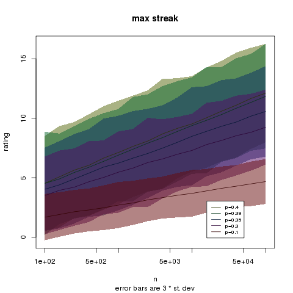
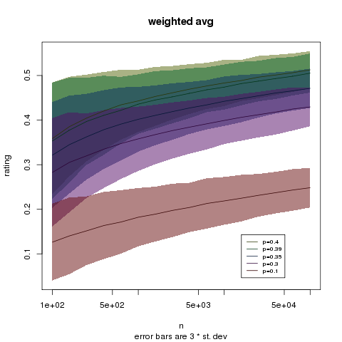
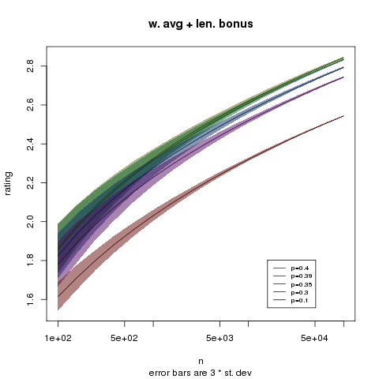

by Charles Zheng
For any non-deterministic single-player game which includes some kind of "game score", we can quantify a player's skill at the game by their expected game score given that they are trying their hardest to maximize the expected game score. Now consider the problem of implementing a public leaderboard for ranking players by skill. We consider a leaderboard based on individual ratings based on individual play histories: this encompasses traditional "high score" boards where a player's highest score effectively acts as their rating. The structure of the rating system should both incentivize players to play as many games as they can, as skillfully as they can, and given play data, actually be able to distinguish players by skill. Of course, it could be impossible to rank a very skilled player correctly if she only plays a few games. On the other hand, given the randomness inherent in each game, an unskilled player can potentially achieve any rating under any rating system as long as they are willing to play an astronomical number of games, creating fresh accounts as necessary. The condition we impose is that if the most skilled player is willing to play a fixed fraction as many games as the most prolific player, the skilled player will still get to the top of the board as the number of games goes to infinity.
For the rest of the discussion, we consider a game with only two possible scores, 0 for "loss" and 1 for "win." This includes a large number of games, from classics such as minesweeper and solitaire, to complex "roguelike" role-playing games.
The rating systems we consider assign a rating to each player, based on their complete game history. One of the considerations behind our rating system is to assume that players have the freedom, and motivation, to create new user accounts to try to obtain a good rating. Hence the system we propose has the feature of providing little incentive for creating multiple accounts. We do rely, however, on the assumption that a player cannot start a new game until he has finished his current one.
An undesirable property of our rating system is that of "rank inflation", that is, even if a player's actual skill stays constant, their rating will keep climbing. On the other hand, the most effective rating system we propose features an incredibly slow inflation rate of the order log(log(n)). By contrast, a "high score" system for a game with Gaussian distributed score (which is already a very idealized case) has rank inflation of the order sqrt(log(n)).
We define a player's rating as follows. For a given player, let X_1,...,X_n denote the scores of all of the games they have played, arranged chronologically. Let f(X_i,...,X_j) be a function assigning a score to a series of one or more consecutive games in the player's history. After choosing a scoring function, the rating is defined as the best score for any series of consecutive games in the player's history, i.e.
rating = max f(X_i,...,X_j) among all (i,j) pairs with 1 <= i <= j <= n
Notice that this gives the rating system a certain robustness. A player can proceed to lose an arbitrarily long strong of games without impacting their rating. More usefully, suppose a player starts out with an initial win rate of 10%--but, as they are more experienced, their win rate goes up to 20%. Under this rating system, the player's earlier games will not negatively affect their rating--after a little while, the ratings will begin to reflect only the player's improved win rate.
We will consider three examples of scoring functions:
From now on, let us consider players with fixed win probabilities for their entire history.
The rating system based on win streak scoring, or simply "max win streak", is an appealing scoring system due to its simplicity, and it has the capacity to separate players by skill--at least in theory. We can approximate the mean and variance of the max win streak for a player with win rate p playing a n games, for large n. It will be easier to work with the fail probability q=1-p. We also imagine that all future games to be played are also fixed in advance--this is a common trick in probability. Splitting the history into streaks of 0 or more wins ending in a loss (except possibly the last streak, which might end in a win), the history consists of approximately n/q streaks. Pretending for a second that (n/q) is an integer, we can first deal with the distribution of the max of (n/q) streaks. Next we argue that the max streak within the n games is going to be close to the max of the first (n/q) streaks.
Each streak has a geometric distribution Geometric(q). Let M, be the max of (n/q) such geometrics: since each Geometric(q) can be approximated by an Exponential(-1/log(p)), we infer that the distribution of G (plus or minus some decimal places) converges to a Gumbel distribution with
E[G] ~= (-1/log(p)) * (log(n/q) + 0.57) Var[G] ~= (pi/(6*log(p)))^2
But this can be simplified even more since we are taking n to infinity,
E[G] ~= log(n) * (-1/log(p))
Now we argue that G, the max of (n/q) streaks, is about the same as the max streak within the first n games. The number of games within (n/q) streaks has mean n and variance np/(q^3). This means that the first n games contains on the order of sqrt(n) more or less streaks than the first (n/q) streaks. Let t be the maximum of (n/q) and the number of streaks in the first n games: t is equal to (n/q) plus possibly a term which is order sqrt(n). In order for the max streak in n games to differ from the max streak in the (n/q) streaks, the longest of t streaks has to either belong only to the n games or the (n/q) streaks, or be the one streak cut off at the nth game. But the difference in the two sets of streaks is order sqrt(n); meanwhile, the longest of t streaks could be any of the t streaks with equal probability 1/t. Thus the probability that the longest streak in t streaks lies within the set difference is order sqrt(n)/t, but since t is order n, the probability is thus on the order of 1/sqrt(n). Furthermore, the event that this occurs is independent of the value of the maximum of the t streaks. The worst that could happen under the event is that the max streak within either the first (n/q) streaks or n games is actually zero. Hence the difference in expected values between the max streak of n games and the max streak of t games is of order 1/sqrt(n) times the expected max streak in t games, but the expected max streak in t games is of order log(n). Hence the expected absolute difference between E[G] and E[max win streak] is bounded in order by log(n)/sqrt(n). But as n grows, log(n)/sqrt(n) goes to zero, so we have
E[max win streak] ~= log(n) * (-1/log(p)) Var[max win streak] ~= (1/log(p))^2
Now consider another player with win rate p-delta, and who is willing to play c*n games to try to overtake the better player. His mean is
E[max win streak of worse player] ~= (log(n)+log(c)) * (-1/log(p-delta))
The mean difference between their max win streaks is thus
E[difference] ~= log(n) * ((-1/log(p))-(-1/log(p-delta))) + log(c) * (-1/log(p-delta))
But since ((-1/log(p))-(-1/log(p-delta))) is positive, the difference will grow and go to infinity as log(n) goes to infinity. Meanwhile
Var[difference] ~= (1/log(p))^2 + (1/log(p-delta))^2
which is essentially constant.
The result is that the better player ends up with a better rating with probability going to one, as n grows.
While max win streak works in a theoretical setting, in practice, it can take a long time for the log(n) difference between two players to swamp the variance. But suppose for a second we could use the average win rate as a rating system. Then the difference in ratings goes to a constant, but the variance shrinks at a rate 1/n. The effect is that the rating system gains resolution for distinguishing players at a rate of sqrt(n) rather than log (n). This makes a huge difference: consider that log(1000)=6.9 while sqrt(1000)=32.
However, the global average cannot be implemented as a rating system in our framework: which is clear, since adding a large number of losses to a player's record will decrease their average. Instead, we can try to find a scoring function such that the resulting rating system behaves similarly to the global mean. A naive first attempt is to define f(X_i,...,X_j)=average(X_i,...,X_j), but this fails for obvious reasons: if the player even has one win in their record, they will recieve the maximum rating of one. So a next attempt is to define a rating system based on the "best weighted average" for a series of consecutive games, score=(# wins in the series)/(length of series + K).
This works well as long as K is comparable to n, the total number of games played. But in our setup, we require that any parameters of the scoring function remain fixed. As a consequence, as n goes to infinity, the rating system based on weighted average actually becomes equivalent to max streak, since once the length of the longest win streak becomes comparable to K, the longest streak ends up having the best weighted average out of any series of consecutive games in the player history.
Adding an iterated log length bonus overcomes this problem: that is, adding to the weighted average score a term L*log(log(length)). [Note: In actual implementations, we actually use log(log(length+2)) simply to avoid negative numbers.] Since the longest streak is of order log(n), the score of the longest streak, which is at most 1+log(log(c*log(n)), is eventually beaten by the score of the entire player history, which is p+log(log(n)). Thus, using the weighted average with iterated log bonus, the player rating converges to p+log(log(n)). Furthermore, the variance drops with rate sqrt(n) since we are taking the average of the entire history. This property allows us to distinguish arbitrarily small differences in player skill.
However, whenever we add a length bonus, we have to be careful to check whether an unskilled player can abuse the length bonus to get a high rating purely by playing a lot of games, possibly by abusing bots. Again, take players with win rates p and p-delta. If the good player plays n games, the worse player has to play m games, where
p-delta+L*log(log(m)) = p+L*log(log(n)) log(m)^L = exp(delta)* log(n)^L log(m) = exp(delta/L)* log(n) m = n^(exp(delta/L))
Take some concrete numbers to see the effect. Set delta=0.01, L=0.1. Then if the good player plays n=1000 games, the slightly worse player has to play m=2067 games to catch up. If some player decides to use a bot, even one with decent AI, e.g. delta=.1, they will to play m=142 million games.
We test the rating system on simulated histories of players with win rates 0.4, 0.39, 0.35, 0.3 and 0.1. We use weighting constant K=20 and length bonus factor L=1. The plots below display the results of averaging over 1000 independent trials. [R code.]
The results are as follows:
We see that even at a hundred thousand games, the max streak struggles to separate the worst player from a player who is four times better.

The weighted average fares somewhat better, but fails to improve much as n increases from 100 games to a thousand times that number. It can initially distinguish the p=0.1 player from the p=0.3 player, but only at the 50k mark can it start to separate the p=0.3 player and the p=0.4 player. It is clear that the weighted average is not behaving much like a global average: indeed, it seems to be operating at a logarithmic speed.

In contrast, the weighted average with log bonus manages to distinguish finer and finer differences in win rate. At a few hundred games it separates the worst player (p=0.1) from the second-worst (p=0.3). At less than a thousand games, it can separate the p=0.3 player from the p=0.35 player. Somewhere around a hundred thousand games it can separate the p=0.39 player from the p=0.4 player.

This performance is comparable to the gold standard--a controlled experiment. If we could obtain n games each from the players with p=0.39 and p=0.4, the difference in the means of those games would be 0.01, while the standard deviation of the difference would be .69/sqrt(n). For a statistically significant Z-score of 3, n would have to be over forty thousand.
Finally, notice how the mean rating curves are basically translates of the same shape: the log(log(n)) curve. This means our theoretical considerations about skill prevailing over raw number of games will apply: an inferior player will have to invest much more than a better player to take the top spot. Indeed, if the best player, p=0.4 plays about 10000 games, the p=0.35 player cannot beat him even if he plays ten times as many games.
Ultimately, whether or not any of these rating systems could be practical for given game depends on the actual number of games which would be reasonable to expect from a typical competitive player, as well as the distribution of game scores. In the case of binary scores, extreme win rates close to 0 or 1 make the problem of rating players accurately more difficult. For the classical game of solitaire, it may be asking too much to expect ten thousand high-quality games from players. Clearly, games with some kind of time limitation may be more feasible. The best minesweeper players can complete games in a matter of minutes: such players may be able to manage an average rate of ten games a day. Even then, three years would be required to accumulate the number of games needed for the truly exceptional players to stand out. But again, even the gold standard of controlled experiments suffers from the same problem.
Prospects are more hopeful for games which already have scoring systems which can somewhat distinguish good and bad players on the basis of a single playthrough. Many of these games already rank players based on the highest score achieved. But one can use the ideas discussed here to rank players even more accurately.
Supposing in particular that one chooses to use the rating system based on best weighted average + length bonus, there is the question of choosing the best parameters K and L. The rating system will be rather unsatisfactory for players just starting out if K is too small or too large. The choice of L has a much greater impact on established players. In some ways, a slightly larger value of L may be preferable to elite players while a smaller value would favor more casual players. Too large, and the bulk of the boards may be overtaken by bots--to the extent that even a player with a slightly higher win rate than the bots cannot compete due to the raw throughput achievable by automation. This would remove much of the incentive for a typical good player to continue competing, while a small handful of elite players may still manage to stay on top by investing huge amounts of time on completing multiple quality games per day. Too small, and ratings start to depend on lucky streaks, which may make the game more fun for casual players, but at the same time renders moot the painstaking efforts top players spend wringing every last percentage point out of the game.
New year's eve, 2013.